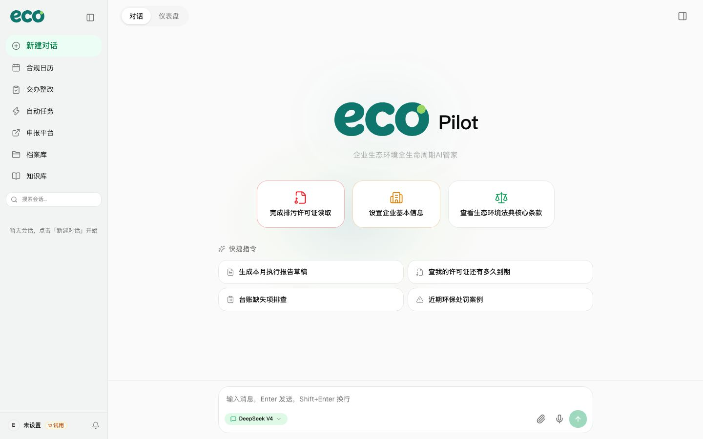
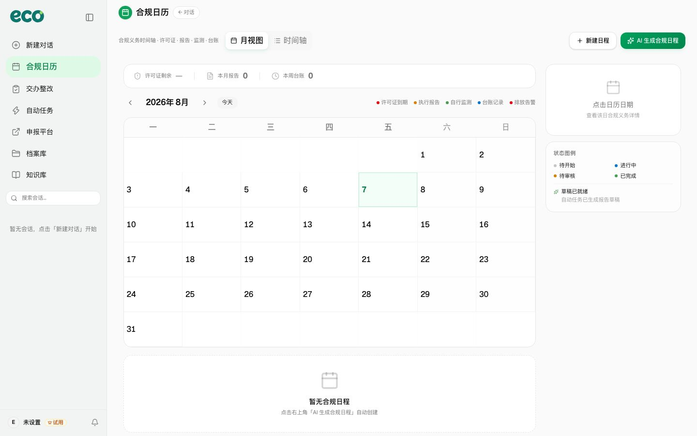
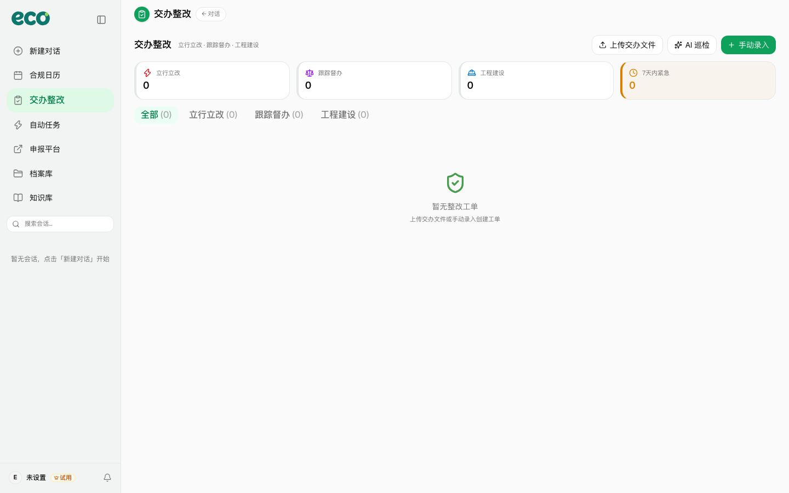
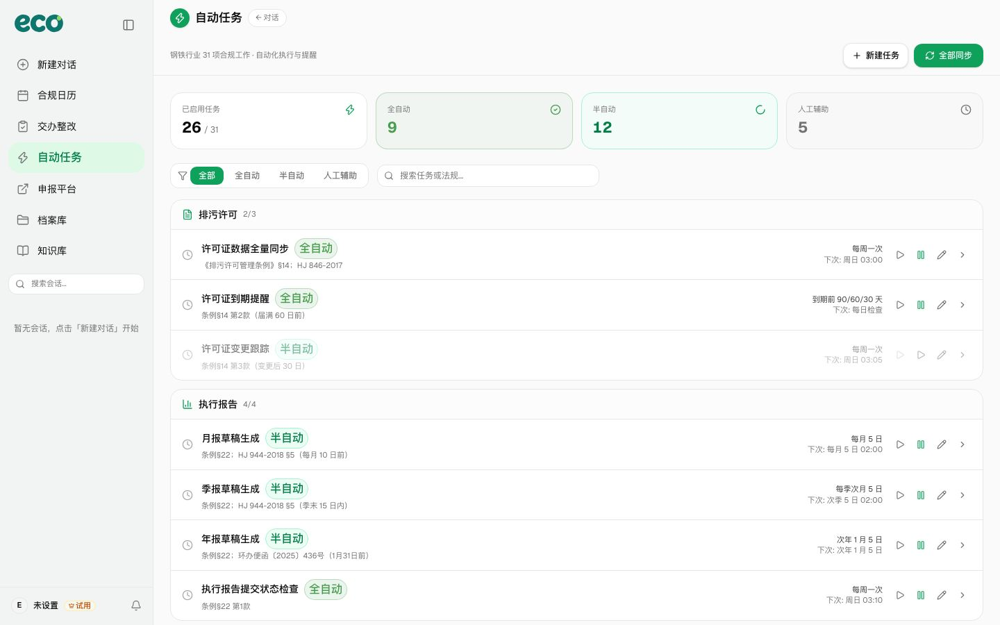
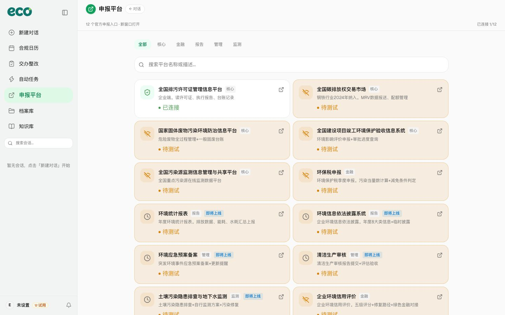
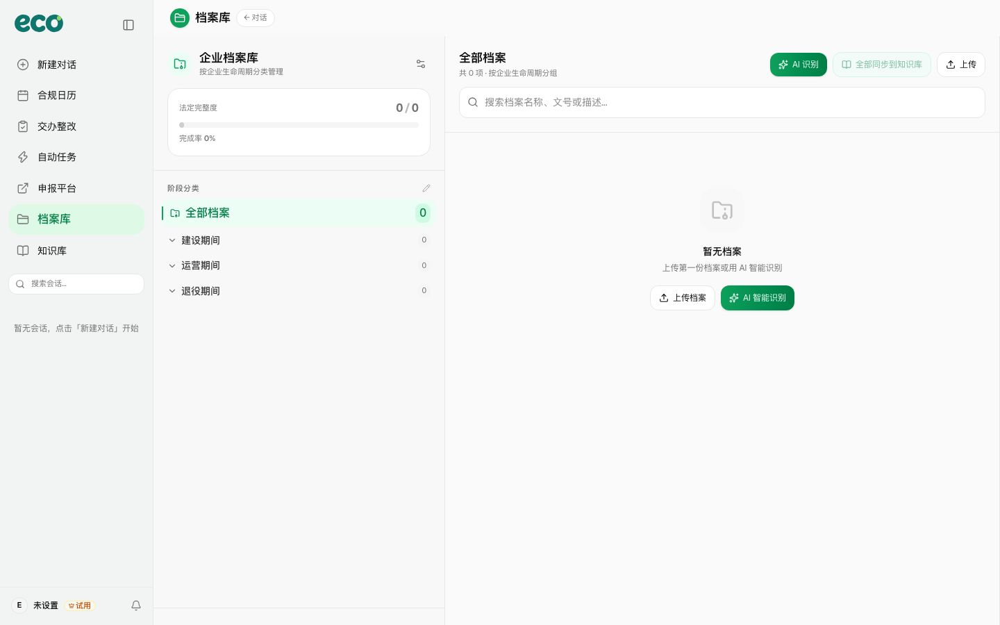
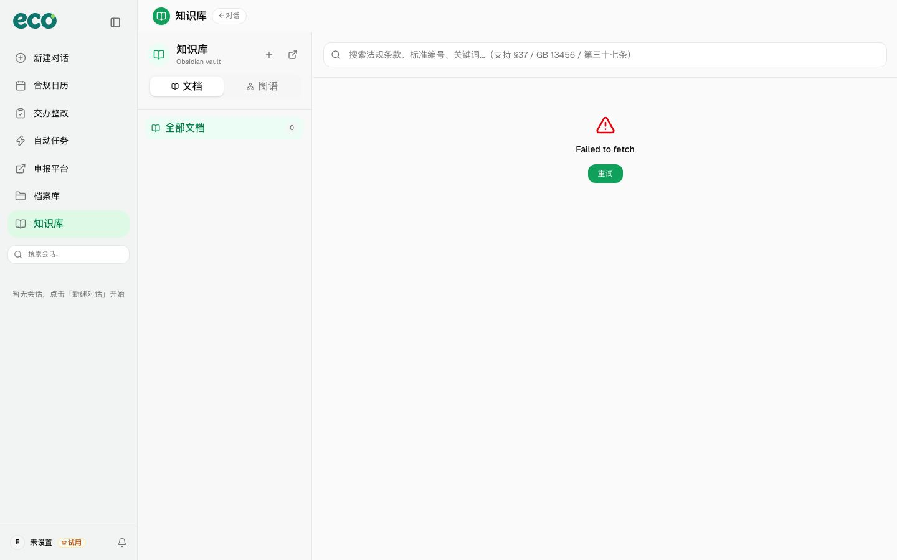

产品功能
七大模块，覆盖企业合规全生命周期
从 AI 对话到自动任务、从档案管理到申报导航——EcoPilot 以排污许可证为锚点，将法典要求翻译成日常动作。

AI 引擎
智能对话
Hermes 驱动的 AI 合规助手，通过自然语言对话即可查询环保法规、获取合规建议和数据分析。是整个平台的知识调度与交互中枢。
- 多轮对话式法规查询
- 合规义务智能解读
- 数据驱动的行动建议

时间管理
合规日历
合规义务的时间可视化工具，一次性涵盖许可证到期、执行报告、自行监测和台账记录四类合规节点。
- 许可证到期预警
- 报告提交节点提醒
- AI 自动生成合规日程

督察闭环
交办整改
环保督察交办问题的全流程闭环管理，覆盖立行立改、跟踪督办、工程建设三种整改类型。
- AI 自动识别交办问题
- 整改工单全流程跟踪
- 法定时限预警

自动化引擎
自动任务
针对钢铁行业 31 项合规工作的自动化执行与提醒引擎，按全自动/半自动/人工辅助三级分级运行。
- 排污许可/执行报告/自行监测
- 14大类法规义务覆盖
- 全自动/半自动/人工辅助三级

政务入口
申报平台
12 个国家级环保政务申报入口的一站式导航，按核心/金融/报告/管理/监测分类组织。
- 排污许可/碳排放/固废管理
- 环保税申报快捷入口
- 平台连接状态实时展示

文档管理
档案库
按企业生命周期（建设/运营/退役）分类管理的环境档案系统，支持法定完整度追踪和 AI 自动分类。
- 三阶段生命周期模型
- 法定完整度进度追踪
- AI 自动分类与智能分析

法规检索
知识库
基于 Obsidian vault 集成的环保法规知识库，支持全文检索、标签分类和双向链接。
- 环保法律法规全文检索
- MOC 目录树 + 标签云浏览
- 反向链接与知识图谱